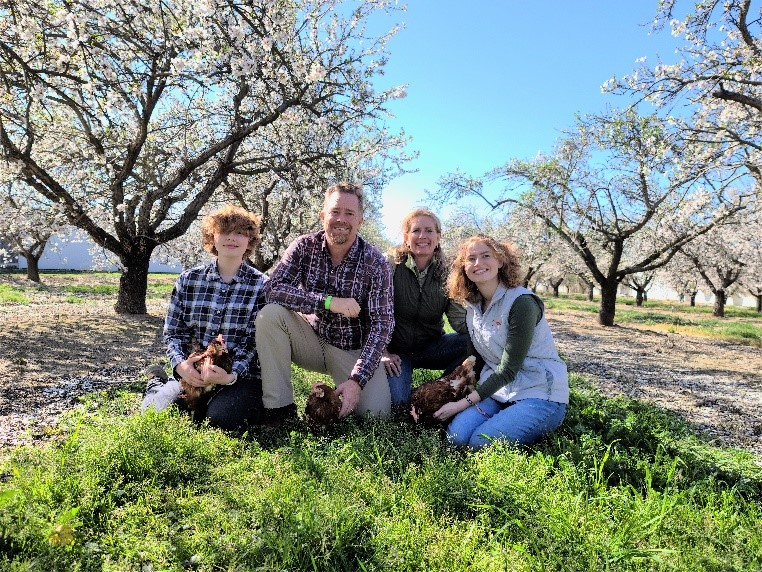
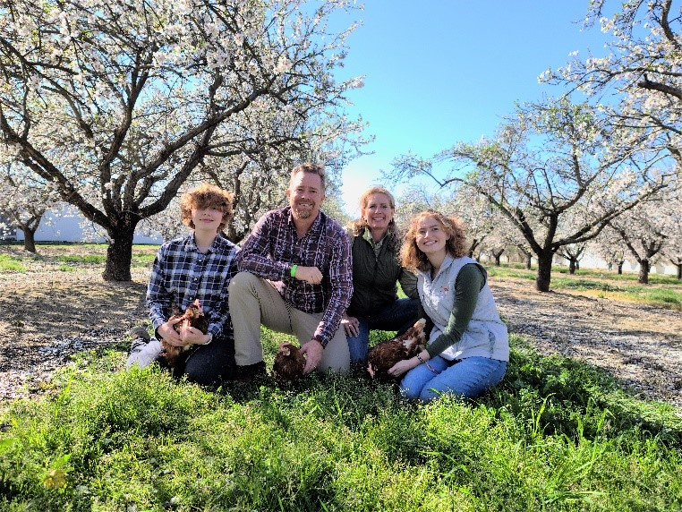
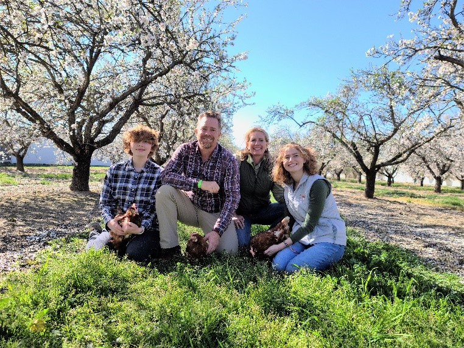

Audrey Gemperle
HI Im AUdrey, Ive Always lived in california, Im hard working and dedicated. currently I do not have much wor experince except fo rwokring on the farm and scouts. Ive been working on my family farm since I was young. I get compensated during farming season due to the large amoutn fo manual labor andorganizing I have to do. I make sure all the macinery runs smoothly, process fruits and vetgbale, harvest fruits adn vegetables. maintian the crops and make sure that they are healthy and well.
Enter I belive that farming and helping out withina physicaly demanding enviroment is an important experince that multi[le peopel should have. Cause it shoes where are food comes from, shows the extenisve nature of farming and overall working the land. What it means to be a farmer, all the little things one has to do on thhe farm. farm farming farm farm. sorry I running out of time.
Almost heaven, West Virginia
Blue Ridge Mountains, Shenandoah River
Life is old there, older than the trees
Younger than the mountains, growin' like a breeze
Country roads, take me home
To the place I belong
West Virginia, mountain mama
Take me home, country roads
All my memories gather 'round her
Miner's lady, stranger to blue water
Dark and dusty, painted on the sky
Misty taste of moonshine, teardrop in my eye
Country roads, take me home
To the place I belong
West Virginia, mountain mama
Take me home, country roads
I hear her voice in the mornin' hour, she calls me
The radio reminds me of my home far away
Drivin' down the road, I get a feelin'
That I should've been home yesterday, yesterday
Country roads, take me home
To the place I belong
West Virginia, mountain mama
Take me home, country roads
Country roads, take me home
To the place I belong
West Virginia, mountain mama
Take me home, country roads
Take me home, (down) country roads
Take me home, (down) country roads
Experience
Team Organizer
• organized and directed a large group of people in a project
• Obtained my Eagle Scout Ranking
• Obtained permits and materials for multiple projects
Scoutt
• Organized events and meetings
• Taught folk on first aid and other survial skills
• Created activity for scouts to enjoy
• Help lead events that had 40 scouts
Education
UC Riverside
Portfolio
 


